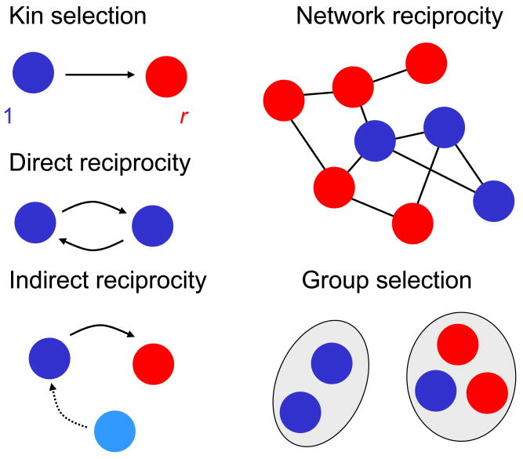

As ML systems expand in size and capabilities, it’s crucial to prioritize safety research. Like any powerful technology, the responsible development and deployment of ML systems require a thorough understanding of potential risks and a dedication to mitigating them. In this blog post, I’ll share what I’ve learned from the Introduction to ML Safety course offered by the Center for AI Safety.
There are four main research areas to mitigate existential risks (X-Risks) from strong AI. These include robustness (withstanding hazards), monitoring (identifying hazards), control (reducing inherent ML system hazards), and systemic safety (reducing systemic hazards)
Safety Engineering
To effectively approach making ML systems safer, we need some sort of structure to guide our thinking. Safety engineering plays an important role in designing systems and technologies that prioritize user well-being and prevent potential harm. It includes a wide array of methodologies, models, and frameworks to understand and manage risks. Understanding safety engineering begins with defining crucial terms:
- Failure Mode: Possible ways in which a system might fail
- Hazard: A source of danger with the potential to cause harm
- Vulnerability: Factors or processes that increase susceptibility to the damaging effects of hazards
- Threat: A hazard with the intent to exploit vulnerabilities
- Exposure: The extent to which elements (e.g. people, property, systems, etc.) are subjected to hazards
- Ability to Cope: The ability to efficiently recover from the effects of hazards
Risk Decomposition
Given a set of hazardous events $H$ that we are concerned about, the risk of them can simply be defined as:
$$ \text{Risk} = \sum_{h \in H} P(h) \text{ Impact}(h) $$
Nominally, we can define the risk as:
$$ \text{Risk} = \text{Vulnerability} \times \text{Hazard Exposure} \times \text{Hazard} $$
For a more precise definition, we need to understand the risk in the context of our total exposure to them and how vulnerable our system is to them. We need to consider the probability of impact and the impact itself.
$$ \text{Risk} = \sum_{h \in H} P(h) \times \text{severity}(h) \times P(\text{contact} \mid h) \times \text{vulnerability}(h) $$
Here are examples of risks, broken down to their nominal components:
| Vulnerability | Hazard Exposure | Hazard | |
|---|---|---|---|
| Injury from falling on wet floor | Bodily brittleness | Floor utilization | Floor slipperiness |
| Damage from flooding | Low elevation | Number of people | Rainfall volume |
| Flu-related health complications | Old age, poor health | Contact with flu carriers | Flu prevalence and severity |
Now that we have decomposed the risks into their components, we can systematically consider how to reduce the risk. In the case of falling from a wet floor, we could:
- Address the hazard itself by getting rid of the mop and bucket, and using autoscrubber instead
- Reduce exposure to hazards by putting up a warning sign
- Or, reduce our vulnerability to the risk by doing strength training to make our body less brittle
Reduce Risks for ML System
Using the risk decomposition, we can break down the risk posed by machine learning systems into parts. The hazard of a machine learning system stems from the alignment problem. Alignment researchers focus on how to reduce the probability and severity of inherent model hazards. The vulnerability of a machine learning system can be addressed by the robustness research field. Robustness considers how we can withstand hazards and thus, how we can reduce our vulnerability to them. Lastly, the hazard exposure of a machine learning system can be characterized by the monitoring research field, which is concerned with identifying hazards. When we can identify a potential hazard, the risk gets lower as we can take steps to limit our exposure to it.
Robustness
Adversarial Robustness
Adversarial attack against a machine learning system is a technique to make a machine learning system misbehave. Often adversarial attacks revolve around the generation of adversarial examples, inputs designed to confuse or deceive the machine learning system. For example, attackers (or adversaries) could add imperceptible noise to an image classifier and make the classifier change its behavior. To humans, the image looked exactly the same, but to the model, the image had changed significantly.

Expanding on this, a simple threat model is to assume adversary has an $l_p$ attack distortion budget, assuming a fixed $p \text{ and } \epsilon$:
$$ ||x_\text{adv} - x || \leq \epsilon $$
The adversary’s goal is to find a distortion that maximize the loss subject to its budget:
$$ x_\text{adv} = x + \arg \max \mathcal{L} (x + \delta, y ; \theta) $$
Fast Gradient Sign Method
Fast Gradient Sign Method (FGSM) is one of the earliest techniques in generating adversarial examples. It obeys an $l_\infty$ attack budget $||x_\text{adv} - x ||_\infty = \epsilon$. Let $\mathcal{L}$ be some loss function (e.g., cross entropy) used to train our model with parameters $\theta$. We then can generate adversarial examples as follows:
$$ x_\text{adv} = x + \epsilon \text{ sign}(\nabla_x \mathcal{L}(x, y;\theta)) $$
We take the sign of the gradient indicates the direction in which the loss function increases the most rapidly. By taking the sign, the FGSM method effectively identifies the direction in which to perturb the input to maximize the loss. It also helps bound the gradient between -1 and 1. This bounding of the gradient makes $x_\text{adv}$ naturally satisfy the $\infty$-norm constraint.
The FGSM is fast and computationally efficient because it only requires a single forward and backward pass through the network to compute the gradient. However, it’s worth noting that FGSM is a relatively weak method for generating adversarial examples and can be defended against easily. Nonetheless, its simplicity makes it a useful baseline attack to expand upon or compare against.
Projected Gradient Descent
Unlike the single-step FGSM attack, Projected Gradient Descent (PGD) attack uses multiple gradient ascent steps and is thus far more powerful. It generate adversarial examples through iterative optimization process. PGD starts with initialization to introduce random perturbation to original input $x$:
$$ x_\text{adv} := x + n, ; \text{where } n_i \sim \mathcal{U}[-\varepsilon,\varepsilon] $$
Then it iterates to refines perturbation in direction that maximize the loss:
$$ x_\text{adv} = \mathcal{P}(x_\text{adv} + \alpha \text{sign}(\nabla_{\delta} \mathcal{L}(x_\text{adv} + \delta, y; \theta))) $$
where $\mathcal{P}(z) = \texttt{clip}(z, x-\varepsilon, x+\varepsilon)$.
In practice, PGD generates very strong adversarial examples. There are many adversarial defenses which are broken by simply increasing the number of steps. On the flipside, the strength of PGD’s adversarial examples gives us a way to train models to be robust.
Adversarial Training
The best-known way to make models more robust to $l_p$ adversarial examples is by adversarial training. During adversarial training, we expose our model to adversarial examples and penalize our model if the model is deceived. In particular, an adversarial training loss might be as follows:
$$ \mathcal{L}(f, D) = \mathbb{E}[\text{CrossEntropy}(f(x),y) + \lambda \cdot \text{CrossEntropy}(f(g_\text{adv}(x)),y)] $$
where $\lambda$ is hyperparameter determining how much we emphasize the adversarial training. This often reduces accuracy, but increases robustness to the specific adversarial attack which our model is trained on.
Transferability of Adversarial Examples
An adversarial example crafted for one model are actually transferable to other models, including models which were trained on a disjoint training set (Szegedy et al. 2014; Goodfellow et al. 2015). Given models $\mathcal{M}_1$ and $\mathcal{M}_2$, $x_\text{adv}$ designed for $\mathcal{M}_1$ sometimes gives $\mathcal{M}_2(x_\text{adv})$ a high loss, even if the architectures are different. Even though the accuracy varies depending on attack method, model architecture, and datasets, transferability demonstrate that adversarial failure modes are somewhat shared across models.
This itself has lead to a new type of adversarial attack, which can be performed without access to the actual model. It involves training a surrogate model, attacking that surrogate model, and hoping the attack transfers to the unseen model (Papernot et al. 2016; Papernot et al. 2017).
Black Swan Robustness
Black Swans are events that are outliers, lying outside typical expectations, and often carry extreme impact. Black Swans often discussed within the context of long-tailed distribution, where the probability of rare events occurring is higher than what would be expected under a normal or Gaussian distribution. Random variables $X_i$ from long-tailed distribution are often max-sum equivalent:
$$ \lim_{n \to \infty} \frac{X_1 + \cdots + X_n}{\max{X_1, \cdots, X_n}} = 1 $$
This means that the largest event matter more than all the other events combined.
We can measure vulnerability to long tail events by simulating them using stress-test datasets. The stress-test datasets are from different data generating process than the training data. The goal is to make model performance not degrade as sharply in the face of extreme stressors.
Benchmarks
Robustness to long tail events is usually measured by performance on robustness benchmarks. Importantly, these benchmarks should only be used for testing models, not training models. These robustness benchmarks are designed to test the robustness of ImageNet classifiers.
ImageNet-C
ImageNet-C (Hendrycks and Dietterich 2019), which stands for “ImageNet Corruptions” is a benchmark created by modifying ImageNet. ImageNet-C applies fifteen common corruptions to ImageNet at five levels of severity each (for a total of 75 corruptions).

The most common metric used for ImageNet-C is mean corruption error or mCE. Simply put, it is an indicator of how much stronger against the image noise is compared to AlexNet. And it is the average of the five noise levels. The lower mCE means stronger model against the noise.
ImageNet-Sketch and ImageNet-R
ImageNet-Sketch (Wang et al. 2019) and ImageNet-R(enditions) (Hendrycks, Basart, et al. 2021) are two similar datasets loosely based off of ImageNet. ImageNet-Sketch is a dataset which collected 50K new sketches of the various ImageNet-1k classes. ImageNet-R is a similar dataset which collected 30K renditions of various styles of the ImageNet-1k classes. Neither ImageNet-Sketch nor ImageNet-R is a subset of ImageNet. Instead, the images are curated from new images scraped off of the internet.


These datasets test whether a model can generalize from a dataset composed of largely real-world images to datasets consisting of sketches or other artistic renditions.
ImageNet-A
ImageNet-A (Hendrycks, Zhao, et al. 2021) is a collection of images belonging to ImageNet classes, which have been adversarially filtered to be difficult for models to classify. Specifically, a large set of images are tested on two different ResNets, and only images which the ResNets both perform poorly on are included. In total, the dataset contains images spanning 200 ImageNet-1k classes. Similar to ImageNet-Sketch and ImageNet-R, ImageNet-A is also not a subset of ImageNet, but is curated from a separately collected set of images.

Improving Long Tail Robustness
Improving the robustness of ImageNet classifiers largely breaks down into three directions: data augmentation, architectural choices, and pretraining techniques.
Data Augmentation
Data augmentation is the process of applying randomized transformations (e.g., horizontal flip, 30 degrees rotation, discoloration) on input examples to create additional valid data. Data augmentation improves robustness by increasing the diversity of a dataset to include perturbed or altered images.
Directions in data augmentation include directly proposing new augmentations (Zhang et al. 2018; Geirhos et al. 2019; Hendrycks, Basart, et al. 2021; Hendrycks, Zou, et al. 2021), developing algorithms which find the best augmentations for any given dataset (Cubuk, Zoph, Mane, et al. 2019; Cubuk, Zoph, Shlens, et al. 2019), or composing multiple augmentations to further increase augmentation strength (Hendrycks et al. 2020; Hendrycks, Zou, et al. 2021).
Model Architecture
Improving model architecture also leads to gains in performance. Currently, there exist two main architecture types in computer vision: convolutional neural networks and transformers. Transformers are a network architecture based heavily on “attention,” a technique for quickly routing information through a neural network (Vaswani et al. 2017). With the introduction of the vision transformer (ViT), researchers quickly demonstrated that vision transformers are more robust compared to ResNets (Bhojanapalli et al. 2021; Morrison et al. 2021; Paul and Chen 2021). ViT’s robustness has been attributed to many of its architectural choices, but it’s generally agreed that its attention mechanism plays a big role in its robustness. For instance, if we limit a transformer’s attention to a local context, similar to the convolutional filters in a ConvNet, robustness decreases (Mao et al. 2021).
For convolutional neural network, researchers at Facebook released the ConvNeXt architecture (Liu et al. 2022) which started at a ResNet50 base and systematically improved the architecture until it was on par with the best vision transformer systems. Interestingly, although they optimize for ImageNet validation performance, they get very strong robustness results as a side effect.
Pretraining Techniques
Facebook’s paper titled “Scalable Vision Learners: Masked Autoencoders” introduces a novel pretraining technique involving masking out large portions of the image and trying to reconstruct them. Masked Autoencoders (MAE) segment images into patches and randomly mask a significant portion (around 80%) of them. In practice, aggressive masking is required, or else a model will only learn to interpolate between patches rather than learn global representations of the image. Furthermore, MAE utilized vision transformers rather than convolutional networks. Vision transformers are designed to for global information aggregation and can deal with the aggressive masking better.
For scalability, MAE employs a two-step autoencoding approach. Initially, it uses a deep encoder to process only the non-masked patches. By only processing the patches which provide information, the encoder only needs to focus on 20% of the image. This, in turns, enables the encoder to scale to deeper architectures. Then, it uses a shallow decoder to reconstruct the whole image. This time, the decoder inputs both the encoded vectors of the non-masked patches as well as vectors for the masked patches. However, since the decoder is much more shallow than the encoder, processing the full image ends up not being a large computational burden as well.
Monitoring
Anomaly Detection
Anomaly detection or out-of-distribution(OOD) detection research focus on detecting anomalies, novel threat and long-tailed event. When a machine learning system encounter an anomaly, it can trigger a conservative feedback policy.
Metrics
In anomaly detection, accuracy score are rarely used as it is not informative enough when there is imbalance between anomalies and usual examples. Assume we have 1 anomaly and 99 usual examples. If the model always predict the examples as “usual”, the accuracy is as high as 99%:
$$ \text{accuracy} = \frac{\text{TP+TN}}{\text{TP+TN+FP+FN}} = \frac{0+99}{0+99+0+1} = 99% $$
In other words, total accuracy is a bad metric for rare events. Instead, anomaly detection traditionally uses other metrics such as FPR 95 and AUROC.
To understand these metrics, we first must understand the concept of true positive rate and false positive rate. Consider a test on different images to detect anomalies. A positive means an image has been flagged as anomaly, whereas a negative means an image has been flagged as usual example. True positive rate is the probability that an usual examples image will be positive (what fraction of all anomalies are flagged). False positive rate is the proportion of positives which should be negatives (what fraction of all usual examples are flagged).
$$ \text{True positive rate} = \frac{\text{True positive}}{\text{True positive} + \text{False negative}} $$
$$ \text{False positive rate} = \frac{\text{False positive}}{\text{True negative} + \text{False positive}} $$
FPR 95
FPR 95 shows false positive rate at 95% true positive rate. We start with selecting a threshold $t$ such that we detect 95% of the anomalies. Then, from the examples flagged as anomaly, we measure the proportion which are actually usual examples. Note that the 95% threshold is somewhat arbitrary. Other papers have used FPR 90 and, in principle, any FPR N could exist. However, FPR 95 is the current community standard.
AUROC
The issue with FPR 95 is that the 95 threshold is somewhat arbitrary and doesn’t reflect the model’s anomaly detection abilities over all other thresholds. Another metric, AUROC, fixes this by being threshold-invariant. Specifically, the receiver operating curve (ROC) is the curve which graphs the true positive rate against the false positive rate. The area under the ROC (AUROC) measures the total area under the curve. AUROC can also be interpreted as the probability that a usual example has a higher confidence score than an anomaly. An AUROC of 0.5 is random, and an AUROC of 1.0 corresponds to a perfect classifier. Some advantages of using AUROC is it works even without calibration. Its also does not depend on ratio of positive to negative, highly useful when anomalies are far less frequent than usual example.
Benchmark
Anomaly detection does not need advance curation of datasets. Simply take two datasets, label one as in-distribution and one as out-of-distribution the benchmark is created. Another common way to generate anomaly detection benchmarks is to use one-class classification. We train a model to recognize only a single class within a dataset. All other examples from all other classes are treated as out-of-distribution.
In image classification, anomaly detection methods are validated on a variety of small datasets. Common datasets include Cifar10 (Krizhevsky 2009), Cifar100 (Krizhevsky 2009), Street View House Numbers (SVHN) (Netzer et al. 2011), TinyImageNet (Le and Yang 2015), Large-scale Scene Understanding (LSUN) (Yu et al. 2016). Usually, either Cifar10 or SVHN is in-distribution and the remaining are out-of-distribution. Cifar10 is also commonly used for one-class classification. In general, the more similar the two datasets are, the more difficult anomaly detection is.
At a larger scale, researchers often use ImageNet-1K (Deng et al. 2009), ImageNet-22K (a superset of ImageNet with 22 thousand classes) (Deng et al. 2009), and LSUN (large scale scene understanding) (Yu et al. 2016). Large-scale one-class classification is often done with either ImageNet-1K or ImageNet-22K.
Calibration
Formally, calibration is defined as follows. Let $\hat{y}$ be the class prediction for $x$ and let $\hat{p}(\hat{y} \mid x)$ be its associated confidence. A classifier if perfectly calibrated if $\mathbb{P}(y=\hat{y} \mid \hat{p}(\hat{y} \mid x)) = \hat{p}(\hat{y} \mid x)$. In other word, calibration involve ensuring that a model’s output probability distribution matches the actual probability of a correct prediction. If a model is perfectly calibrated, when it gives a 90% confidence to a certain prediction, the prediction will be correct 90% of the time.
Calibrated models can better convey the limit of their competency by expressing their uncertainty. We can then know when to override the model. Model confidences also are more interpretable the more they are calibrated.
Metrics
To evaluate calibration, we can use four different metrics: expected calibration error, maximal calibration error, negative log likelihood, and brier score. Expected calibration error is by far the most common, although the other metrics are also sometimes used.
Expected Calibration Error
Expected calibration error (ECE) is the primary metric for testing calibration (Naeini, Cooper, and Hauskrecht 2015). ECE measures the average discrepancy between the predicted probabilities and the actual outcomes over different confidence intervals. To calculate ECE, we first divide the confidence interval into equally spaced bins. For instance, we might let the bins be [0, 0.1], [0.1, 0.2], … [0.9, 1]. Then we compute the absolute difference between the average predicted probability and the actual probability for each bin. Taking the weighted average of these differences gives the ECE.
Formally, say we have $n$ examples partitioned up into $M$ bins $B_1, B_2, \cdots, B_M$. Let $\text{acc}(B_M)$ be the average accuracy of examples in the bin and let $\text{conf}(B_M)$ be the average confidence of examples in the bin. Then ECE is defined as:
$$ \text{ECE} = \sum_{m=1}^M\frac{|B_m|}{n}\left|\text{acc}(B_m) - \text{conf}(B_m)\right| $$
ECE ranges between 0 and 1, with lower scores being better. A low ECE indicates good calibration, meaning that the predicted probabilities are close to the true probabilities across different confidence levels.
Maximum Calibration Error
Maximum Calibration Error (MCE), on the other hand, identifies the maximum discrepancy between predicted probabilities and actual outcomes across all confidence intervals (Naeini, Cooper, and Hauskrecht 2015). Like ECE, we partition the interval up into bins. However, instead of taking a weighted average of calibration score over bins, we take the maximum calibration error over bins. MCE helps in identifying the worst-case scenario where the model’s predictions are most significantly different from the true probabilities.
$$ MCE = \max_{m \in {1, \cdots, M}}|\text{acc}(B_m) − \text{conf}(B_m)| $$
Like ECE, MCE ranges between 0 and 1, with lower scores being better. A low MCE indicates that the model is well-calibrated even in its most extreme predictions.
Negative Log Likelihood
The likelihood refers to the probability of observing the given data under a specific statistical model, given the model parameters. For a set of observed data $X$ and model parameters $\theta$, the likelihood function $L(\theta \mid X)$ quantifies how likely it is to observe $X$ given parameter values $\theta$. Negative log-likelihood is simply the negative logarithm of the likelihood function:
$$ \text{NLL}(\theta \mid X) = - \log L(\theta \mid X) $$
Negative log likelihood is commonly used for maximizing predictive accuracy. However, it is also useful for calibration as well. A classic result in statistics shows that NLL is minimized precisely when $p(y\mid x)$ matches the true probability distribution $\pi(y\mid x)$ (Hastie, Tibshirani, and Friedman 2009). In other words, NLL is minimized at zero when the classifier is perfectly calibrated. In addition, a poor classifier can have unbounded NLL.
Brier Score
Lastly, Brier score is a common way to measure the accuracy of probability estimates, historically used in measuring forecasting accuracy (Brier 1950). It is equivalent to measuring the mean squared error of the probability, as follows:
$$ \text{Brier Score} = \dfrac{1}{n}\sum\limits_{i=1}^n[\hat{p}(\hat{y}_i\mid x_i)-\mathbf{1}(\hat{y}_i=y_i)]^2 $$
Brier score is combination of calibration error and refinement and can be decomposed into confidence bins. Assume we partition the $n$ samples into bins. Calibration error and refinement then:
$$ \text{Calibration error} = \sum_{i=1}^b \frac{|B_i|}{n} \bigg( \frac{1}{|B_i|}\sum_{k\in B_i}\mathbf{1}(y_k = \widehat{y}_k) - \frac{1}{|B_i|}\sum_{k\in B_i} \hat{p}(\hat{y}_k \mid x_k) \bigg)^2 $$
$$ \text{Refinement} = \sum_{i=1}^b \frac{|B_i|}{n} \bigg(\frac{1}{|B_i|}\sum_{k\in B_i}\mathbf{1}(y_k = \widehat{y}_k)\bigg) \bigg(1 - \frac{1}{|B_i|}\sum_{k\in B_i}\mathbf{1}(y_k = \widehat{y}_k)\bigg) $$
Hence the Brier score incentives models to be well-calibrated (calibration error) and highly accurate (refinement).
Approaches
Temperature Scaling
Models can become more calibrated after training by adjusting the softmax temperature. Specifically, it is implemented as follows:
$$ \text{softmax}(x, T) = \frac{\exp(x/T)}{\sum_i \exp(x_i/T)} $$
Temperature scaling is usually implemented by first training a model normally and then determining the optimal value of temperature after the model has finished training. Specifically, the temperature is optimized to minimize the negative log likelihood of the validation set.
Architectures
Others have shown that the choice of architecture improves both in-distribution and out-of-distribution calibration (Minderer et al. 2021). In particular, researchers test out seven different models on image classification tasks. They find that two non-convolutional models, vision transformer (Dosovitskiy et al. 2021) and MLP-Mixer (Tolstikhin et al. 2021), are naturally calibrated with an ECE on ImageNet of between 0.01-0.03. The other five networks had convolutional architectures and had ECE between 0.01-0.09.
MLP-Mixer is an architecture which only relies on multi-layer perceptrons to do image classification. Strikingly, despite not leveraging convolutions, both vision transformers and MLP-Mixer perform very well at large scales; MLP-Mixer held an ImageNet accuracy of 87.94%, and vision transformers an accuracy of 90.45%.
Other Methods
Other approaches include methods which assign probabilities based on some binning schema (Zadrozny and Elkan 2001; Naeini, Cooper, and Hauskrecht 2015), methods which leverage ensembles of models (Gal and Ghahramani 2016; Lakshminarayanan, Pritzel, and Blundell 2017), and methods which train directly on the calibration metrics (Kumar, Sarawagi, and Jain 2018).
Transparency
Transparency tools can helps provide clarity on the inner working of a model. Model changes can sometimes cause the internal representations to change as well. It’s desirable to understand when models process data qualitatively differently. Performance score alone does not reflect the properties of a model very well. For instance, StyleGAN3-R and StyleGAN2 have different internal representations despite having similar downstream performance. When we can look inside of networks, we can find helpful properties.

Saliency Maps
Saliency maps are a visualization technique commonly used to understand which parts of an input image contribute most significantly to the output of a neural network model, typically a convolutional neural network. Saliency maps highlight regions in an image that are “salient” or most relevant to the model’s prediction.
Gradient-Based
Using this technique, we can compute the gradients of the model’s output with respect to the input image pixels, $\nabla_x y$. These gradients indicate how much the output would change concerning small changes in the input pixels. Regions with higher gradient values indicate that small changes in those regions would lead to more significant changes in the model’s prediction. Therefore, these regions are considered more salient. Even though it is simple and effective, it may produce noisy or sparse maps.
SmoothGrad
SmoothGrad is an extension of the gradient-based approach. Instead of calculating gradients with respect to the input image directly, it takes multiple samples of the input image with added noise and then averaging the gradients across these samples. Let $N$ represents the number of noisy samples, $x_i$ represents noisy sample of the input image, and $\nabla_{x_i} y$ represents the gradient computed for each noisy sample. SmoothGrad then can be calculated as:
$$ \text{SmoothGrad} = \frac{1}{N} \sum_{i=1}^N \nabla_{x_i}y $$
SmoothGrad is useful for reducing noise and producing more reliable saliency maps, particularly in cases where the gradient-based method may produce noisy or sparse results.
Guided Backprop
Guided backprop is a modification of the backpropagation algorithm used to compute gradients during training. In guided backprop, only positive gradients are allowed to propagate backward, while negative gradients are set to zero. By allowing only positive gradients, guided backpropagation highlights the parts of the input image that contribute positively to the model’s prediction. Guided backprop can produce sharper and more localized saliency maps compared to standard gradient-based methods, making it useful for tasks such as object detection and segmentation.
There are many other saliency maps technique available, but many of them don’t pass basic sanity checks. One sanity check is, if we randomize the layers and the saliency maps don’t change much, it suggests they don’t capture what the model has learned. As such, many transparency tools make fun-to-look-at visualizations which don’t actually inform us about how the models work.

Feature Visualizations
The primary objective of feature visualizations is to generate images that maximally activate specific neurons or filters within a neural network layer. By doing so, we can gain insights into the types of features or patterns that these neurons are designed to detect. Feature visualizations typically involve an optimization process where an initial noise pattern is iteratively modified to maximize the activation of a target neuron or filter. This process involves adjusting the pixel values of the input image to maximize a certain objective function, often based on the activation of the target neuron or filter.
Feature visualizations can target neurons or filters at different layers of the neural network. Lower layers tend to capture simpler features like edges and textures, while higher layers capture more complex and abstract features.
For example, a neuron in a CNN trained for object recognition might respond strongly to images of cats, and feature visualization of that neuron could produce images resembling cats.

Trojans
In the context of machine learning models, a “Trojan” refers to an attack where an adversary intentionally manipulates or modifies a model during its training phase. This is done to introduce vulnerabilities or biases, often without being detected by standard evaluation methods. When this manipulated model deployed for inference, it can exhibit malicious behavior, such as misclassifying specific inputs, leaking sensitive information, or being triggered by specific patterns or inputs.
Data Poisoning
Data poisoning involves injecting malicious data points into the training dataset. The poisoned data points are carefully crafted to bias the model towards certain behaviors or to introduce vulnerabilities that can be exploited during inference. One such attack is using adversarial examples. These examples are perturbed versions of legitimate data points that are modified in such a way that they are misclassified by the model. Using this, attackers can bias the model’s decision boundaries. Attackers also can use label flipping technique, where they intentionally mislabels a subset of the training data and induce the model to learn incorrect associations. Lastly, attackers can poison the training data by introducing subtle modifications or perturbations to legitimate data points. These modifications may not be easily detectable but can cause the model to learn incorrect patterns or associations.
Model Poisoning
Model poisoning involves tampering with the training process itself, either by modifying the model architecture, altering the loss function, or injecting malicious code into the training pipeline. Attackers can manipulate the gradients used during the training process to modify the model’s parameters in a way that benefits the attacker’s objectives. Attackers may also tamper with the hyperparameters used during training, such as learning rate or regularization strength. By manipulating these hyperparameters, attackers can affect the model’s convergence behavior and final performance.
Backdoor Attack
Backdoor injection is a specific type of model poisoning attack where the attacker inserts a hidden trigger or “backdoor” into the model during training. This trigger is typically a specific pattern or input that causes the model to exhibit malicious behavior when encountered during inference. Backdoor triggers are designed to be stealthy and difficult to detect. They may only activate under specific conditions or when presented with certain inputs, making them challenging to identify using standard testing and validation procedures.

Trojan Defense
Detecting trojans and defense against them can be challenging because they are often designed to evade standard testing and validation procedures. Normal validation techniques such as cross-validation or performance metrics may not detect Trojans because they are designed to evaluate the overall accuracy of the model rather than identifying specific malicious behaviors. To mitigate the risk of Trojan attacks, researchers are exploring various defense mechanisms such as neural cleanse and meta-networks.
Neural Cleanse
Neural cleanse involves reverse-engineering the trojans by searching for a trigger and target label. To reverse engineer the trigger:
-
First, we find the minimum delta needed to misclassify all examples into $y_i$
$$ A(x, m, \Delta) = x’ $$ $$ x’_{i,j,c} = (1-m_{i,j}) \cdot x_{i,j,c} + m_{i,j} \cdot \Delta_{i,j,c} $$
-
Repeat for every possible target label
-
Then, we got the reverse-engineered trigger
Even though we can’t always recover the original trigger, we can reliably know whether a network contains trojans in the first place.

Meta-Network
We also can train a neural network to analyze other neural networks. For example, given a dataset of clean and trojaned networks, we can train input queries and a classifier on the concatenated outputs. One problem with this technique is it can be computationally expensive.

Detecting Emergent Behavior
Ensuring the safety of models becomes challenging when their capabilities are not fully understood. Imagine a programming bot that unexpectedly gains the ability to access the internet and engage in hacking activities as it scales up with more parameters or computational power. This rise in performance could be dangerous as we can’t predict their capabilities.
Performance Spikes
Some models possess quantitative capabilities that are hard to predict. For example, the accuracy of an adversarially trained MNIST model significantly increase as it’s capacity scale increases.

Unanticipated Capabilities
Some model’s capabilities can be entirely unanticipated. Qualitatively distinct capabilities may spontaneously emerge, even if we do not train models to have these capabilities explicitly. Large language models, such as GPT-3, are trained to predict the next token in a sequence of words. As the number of parameters are scaled, these models become capable of performing tasks they were not explicitly trained on, including three digits addition and program synthesis (writing code).

Emergent Internal Computation
Sometimes, interpretable internal computation can emerge. Some self-supervised vision transformers such as DINO can learn to use self-attention to segment images, without explicit segmentation supervision. This can be seen by producing saliency maps thresholding the self-attention maps to retain 60% of the probability mass.

Grokking
Grokking is a phenomenon by which emergent capabilities comes from scaling the number of optimization steps rather than model size. Model’s undergo a phase transition, suddenly generalizing and sharply increasing validation accuracy, after initially only memorizing and overfitting to training data.

Recent work suggest that grokking is really all about phase changes. If we limits the data and regularizes just enough, the generalized solution is preferred over the memorized solution. Furthermore, grokking can be interpreted as the model interpolating smoothly between the memorizing and generalizing solution, and not just some random walk in the search space.
Proxy Gaming
Proxy gaming can be understand using the cobra effect. As the story goes, during British ruling of India, they are concerned about the number of venomous cobras in Delhi, and offered bounty for every dead cobra. Initially, this was a successful strategy; large numbers of snakes were killed for the reward. Eventually, however, people began to breed cobras to receive the bounty. Incentivizing the proxy goal of dead cobras failed at achieving the objective of a reduced cobra population, as it was over-optimized or gamed through raising cobras for slaughter.
Another example is, to increase the user satisfaction, a website can use the number of clicks as the proxy. This can be gamed by promoting clickbait, or making the user addicted to the website. This observation has been termed auto-induced distributional shift and has been shown to be detectable in principle.
We also can find many examples of proxy gaming in the reinforcement learning paradigm. One classic example is in the CoastRunners game. The goal of the game is to finish the boat race quickly and (preferably) ahead of other players. As a proxy, the RL agent was given the goal of achieving a high score as the researchers assumed the score earned would reflect the informal goal of finishing the race. However, the agent managed to obtain high score through ’turbo boosting’ on loop, while also crashing, burning, colliding into other boats, and going in the wrong direction.

When objectives approximated with proxies, errors can arise due to limited oversight, measurement error, and the difficulty of capturing everything that we actually cares about. With this in mind, optimization algorithms should be created to account for the fact that the proxy is not perfect, and we should find ways to make proxies more robust.
Control
Honest Models
To begin with, we need to distinguish between truthfulness and honesty in the context of machine learning. While a truthful model accurately reflects the data it was trained on, an honest model goes a step further. It not only reflects the data faithfully but also behaves transparently and reliably across various scenarios. Honest model will only makes statement that it believes to be true.
Consider the example of a chatbot trained using reinforcement learning to converse with users. To maximize engagement metrics, such as response time or user interaction, the chatbot might learn to tell users what they want to hear rather than providing honest responses.
TruthfulQA
TruthfulQA is a benchmark designed to evaluate the truthfulness of language models in generating answers. It consists of 817 questions across 38 categories, such as health, law, finance, politics, and more. The questions are designed to spur LLMs to choose imitative falsehood answers instead of true answers. The dataset uses a strict standard for truth, where a claim counts as true if it describes the literal truth about the real world, and claims that are only true according to a belief system or tradition are counted as false.
Machine Ethics
As AI systems become more autonomous, they will need to start making decisions that involve ethical considerations. At its core, machine ethics seeks to address the ethical implications of AI and autonomous systems. How do we ensure that these systems behave in morally acceptable ways? Can machines be programmed to make ethical decisions? And what are the implications of entrusting ethical decisions to non-human agents?
One of the fundamental challenges in machine ethics is defining what constitutes ethical behavior in the first place. Ethics is deeply rooted in human culture, values, and norms, making it difficult to formalize into algorithms and rules.
Ethics Background
Utilitarianism
Utilitarianism centers on the idea of maximizing utility or happiness for the greatest number of individuals. Utilitarian tend to focus on robustly good action such as reducing global poverty and safeguarding long-term trajectory of humanity. From a utilitarian standpoint, whether an act is morally right depend on actual consequences as opposed to the intended or likely consequence. Utilitarian also claim moral rightness depend on total net good in consequence as opposed to average net good per individual.
Deontology
Deontology, often associated with philosophers like Immanuel Kant, focus on the importance of moral duties and principles in guiding ethical action. From a deontological perspective, certain actions are inherently right or wrong, regardless of their consequences.
Virtue
Virtue ethics, traced back to ancient Greek philosophers like Aristotle, focuses on the development of virtuous character traits. Virtue ethics emphasizes acting as a virtuous person would act. From a virtue ethics perspective, ethical behavior arises from the cultivation of virtues such as honesty, empathy, and integrity.
Ordinary Morality
Most people follow what is called as ordinary morality, which is a combination of various moral heuristics as above. Ordinary morality incentivizes exhibiting virtues and not crossing moral boundaries. Examples of ordinary morality are: do no kill, do not deceive, obey the lay, do your duty.
As ordinary morality change frequently and maximizing its would likely be catastrophic, AI systems should model more than only ordinary morality. In some sense, modeling ordinary morality is like approximating a morality policy and is model-free, while normative ethics provides a model-based understanding.
Model-based moral agents are more interpretable and will likely generalize better under distribution shift. These properties will be crucial when AI systems dramatically and rapidly transforms the world.
Systemic Safety
Improving Decision Making
Human judgement is not always perfect, particularly in moments of crisis or disagreement. Thus, we aim to improve the decision-making of institutions and leaders by employing ML systems. These systems could have more objective, calibrated, and accurate judgements to be used in the high-stakes situations such as conflict de-escalation, or pandemic response.
Forecasting
Forecasting is the process of making predictions about future events, and refining predictions as new information become available. There are two main categories of forecasting: statistical and judgmental. Statistical forecasting uses statistical tools such as moving average and autogression to make predictions. Judgmental forecasting uses forecasters’ own judgement integrated from statistical models, news, accumulated knowledge, a priori reasoning.
ML systems could augment human forecasters by processing text more quickly, discerning patterns in high-dimensional spaces, or considering large amounts of context across a variety of topics and time horizons. Specifically, highly capable ML systems could act as advisory systems, incorporating large quantities of historical context to help brainstorm ideas or risks.
Autocast
Autocast is a benchmark for measuring the forecasting performance of language models (Zou et al. 2022). It includes a diverse set of forecasting questions, spanning variety of topics, time horizons, and forecasting websites. It also includes a corpus of news articles for information retrieval. (Zou et al. 2022) trains four models on the Autocast dataset, and conclude that larger models which incorporate information retrieval perform best, although these ML methods still lag significantly behind human expert performance.
Cooperative AI
As our societies, economies, and militaries become ever more powerful and connected, the need for cooperation becomes greater. Advanced AI will only exacerbate existing cooperation problems through increasing power and interconnectedness of actors further. Cooperative AI seeks to reverse these problems. It asks how can we use advances in AI to help us solve cooperation problems? Prior work in AI safety has focused primarily on the single-single paradigm, in which a single human interacts with a single AI agent. This seems insufficient - it seems likely that in future we will need to foster cooperation between complex systems of humans, machines and institutions of both. Cooperative AI improves AI safety through reducing risks from cooperation failures. It encompasses both technical and governance work, and falls primarily under systemic safety.
Game Theory
To understand cooperation better, we can use mathematical framework to think about them. Game theory is the study of mathematical models of strategic interactions among rational agents, and can model a large range of possible cooperation problems.
Non Cooperative Games
Non-cooperative games are a class of games where players make decisions independently. Each player typically aims to maximize their own utility or payoff, without consideration for the interests or strategies of the other. One classic example is the prisoner’s dilemma. Suppose two criminals are arrested and placed in separate interrogation rooms. They are given the option to cooperate with each other (remain silent) or betray each other (betray). The payoffs are structured such that if both remain silent, they both receive a lighter sentence. However, if one confesses and the other remains silent, the one who confesses gets an even lighter sentence while the one who remains silent gets a much heavier sentence. If both confess, they both receive a moderate sentence. In this game, we can see that each player’s best individual strategy is to confess, even though both would be better off if they both remained silent.

In this game, we can identify the Nash equilibrium, which is a set of strategies where no player can benefit from deviating from their strategy. In the prisoner’s dilemma, the Nash equilibrium occurs when both players choose to confess. If one player deviates from this strategy, the other player has an incentive to also confess, resulting in both players receiving a moderate sentence.
Furthermore, in the prisoner’s dilemma, confessing is a dominant strategy for each player. A dominant strategy is a strategy that yields a higher payoff regardless of the strategy chosen by the other player. In this case, regardless of whether the other player remains silent or confesses, each player receives a higher payoff by confessing.
Another example of non-cooperative game is stag hunt. In this game, there are two hunters. There are two rabbits and one stag in the hunting range. Before leaving to go hunt, each hunter can only take equipment that catches one type of animal. The stag has more meat than the two rabbits combined, but the hunters have to cooperate with each other to catch it, while the hunter that catches rabbits can catch all the rabbits. The payoff matrix is as follows:

Here, there is no dominant strategy, and both diagonal entries are Nash equilibria. If hunter A knows that hunter B is going to catch stag, then hunter A should also take equipment to catch the stag. If hunter A knows that hunter B is going to catch the rabbits, then that hunter should go to catch a rabbit too! Once again, self interested agents do not necessarily achieve the optimal outcome, so cooperation is important.
Cooperation in Nature
We can learn a lot through studying mechanisms facilitating cooperation in the natural world, and then apply these to AI. By default, natural selection can oppose cooperation. Suppose initially there exists some group of cooperators. If someone with more defecting, or non cooperating traits emerge, they may free ride on the efforts of the collective, and obtain a comparative evolutionary advantage. Natural selection favors this evolutionary fitness, and so over time the group may become more defective. This raises the question, how does cooperation arise at all in nature?
Nowak presents a theory called the Five Rules for the Evolution of Cooperation:
-
Kin selection operates when the donor and recipient of an altruistic act are genetic relatives. For example, a gazelle may make some loud noise to warn family members of a predator, even if this makes the predator more aware of it’s location, as the evolutionary benefit of potentially saving its genetic kin may be greater
-
Direct reciprocity requires repeated encounters between two individuals
-
Indirect reciprocity is based on reputation; a helpful individual is more likely to receive help
-
Space selection/network reciprocity means clusters of cooperators out compete defectors
-
Group selection is the idea that competition is not only between individuals, but also between groups. Groups with a higher proportion of cooperative members may outcompete groups with a lower such proportion. For example, if one group has individuals more willing to go to war and fight, being less egoistic than the other group, they may win against the other group

Another observation from nature is that micromotives do not necessarily match macrobehaviour. That is to say, groups of individuals behave as complex systems, and alignment of components does not guarantee alignment of the entire system. For instance, let’s say agents have a preference for more than $\frac{1}{3}$ of their neighbours to belong to the same group, else move. Then this mild in-group preference gets exacerbated and the individuals become highly segregated.